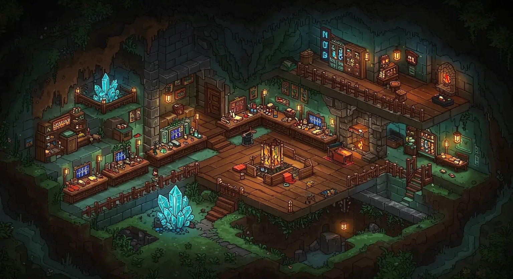

LANTERNS LIT. PICKS READY.
The hill is hollow.
Make it yours.
Every tunnel tells a story. Your crew keeps writing it while you’re away.
LORD ASHCOMBE’S LEDGERcrowns still owed
CROWNS—
PRODUCTION—
ORE IN STORAGE—
CRYSTALS / OIL—
YOUR LIVING MINE
The Cutting
1 miner at work

Tap the glowing ore to swing your pick. Hired miners work here automatically, even while you’re away. Dispatch carts when storage fills.